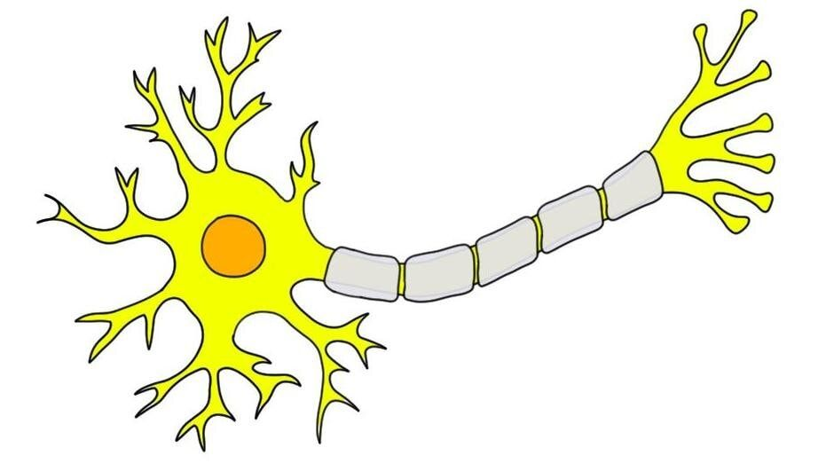
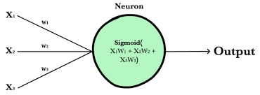
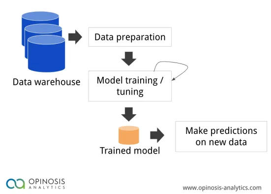
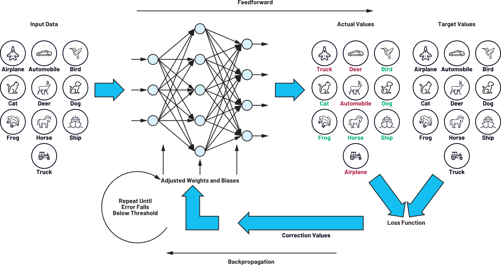
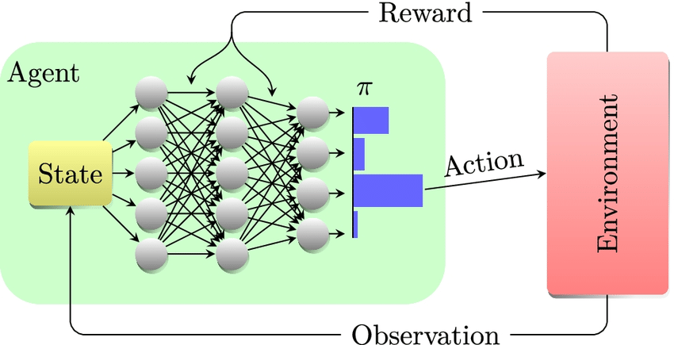
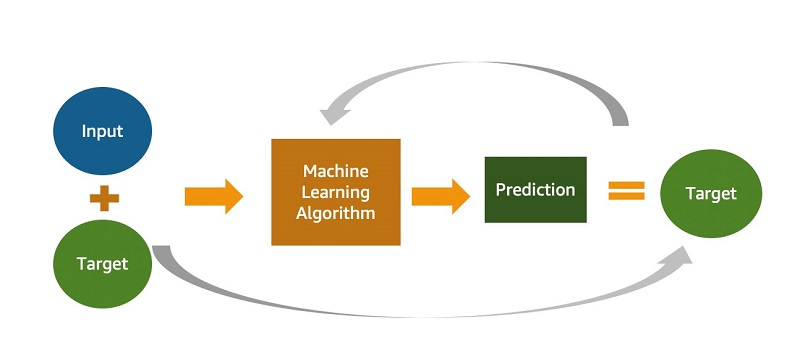
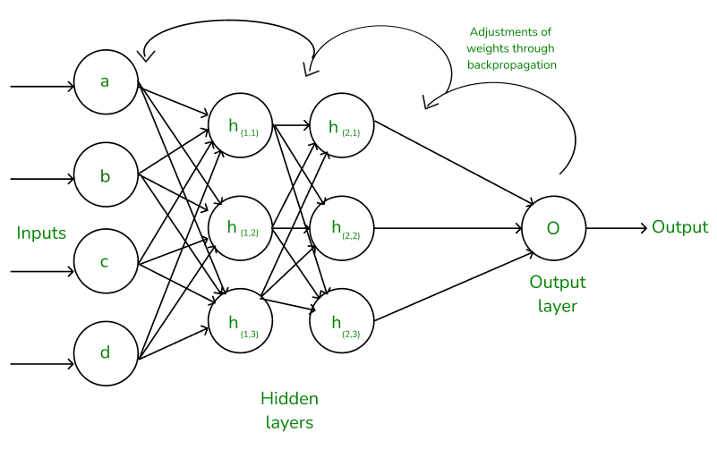
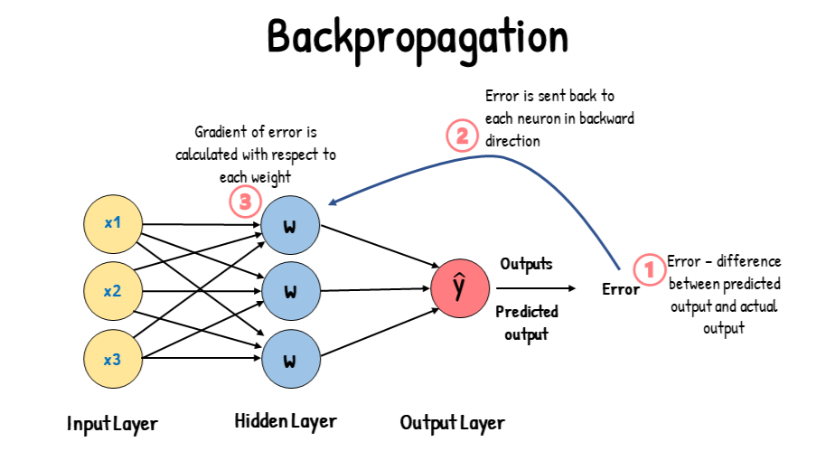

Невронни Мрежи(Въведение)
В биологията определението за неврон е градивен елемент или единица, които изпращат импулси помежду си, и изграждат връзка помежду си чрез синапси като по този начин изграждат невронна мрежа. В Изкуствения Интелект(ИИ) или по-точно в Машинното Обучение(МО) това е математически модел. Невронните мрежи в МО се създават чрез графи.
Невроните са представени като върхове, а връзката между тях е чрез ребра. Невроните в такъв модел получават “сигнал” от другите неврони, който представлява най-често число. Силата на връзката между невроните се определя от число, което се нарича “тегло”. Изходът или резултата от този неврон се изчислява от не линейна функция, наричана още активираща, след което този резултат се предава на следващия неврон с най-голямо тегло.
Обикновено невроните се агрегират в слоеве. Различните слоеве могат да извършват различни трансформации на своите входове. Сигналите пътуват от първия слой (входния слой) до последния слой (изходния слой), вероятно преминаващ през множество междинни слоеве (скрити слоеве). Мрежата обикновено се нарича дълбока невронна мрежа, ако има поне два скрити слоя.
Обучение
Невронните мрежи обикновено се обучават чрез емпирично минимизиране на риска. Този метод се основава на идеята за оптимизиране на параметрите на мрежата, за да се сведе до минимум разликата или емпиричния риск между прогнозирания изход и действителните целеви стойности в даден набор от данни.
Градиентни методи като обратно разпространение (backpropagation) обикновено се използват за оценка на параметрите на мрежата. По време на фазата на обучение невронните мрежи се учат от обозначени данни за обучение чрез итеративно актуализиране на своите параметри, за да се сведе до минимум определена функция за загуба. Този метод позволява на мрежата да се обобщава до невидими данни. Има и други видове обучение.
Учене с неподдържано обучение(Unsupervised Learning). Това обучение включва данни без етикетирани изходни променливи. Основната цел е да се разбере основната структура на входните данни (x). За разлика от контролираното обучение (обучението с прогнозиран изход), няма инструктор, който да ръководи процеса. Вместо това фокусът е върху моделирането на моделите на данни и връзките, като техниките като групиране и асоцииране често се използват.
Учене с укрепване на обучението(Reinforcement Learning). Укрепващото обучение дава възможност на невронната мрежа да се учи чрез взаимодействие със своята среда. Мрежата получава обратна връзка под формата на награди или наказания, като я насочва да намери оптимална политика или стратегия, която максимално максимално награждава наградите с течение на времето. Този подход се използва широко в приложения като игри и вземане на решения.
 История
Днешните дълбоки невронни мрежи се основават на ранна работа в статистиката преди повече от 200 години. Най -простият вид невронна мрежа за препращане (Feedforward Neural Network) е линейна мрежа, която се състои от един слой от изходни възли с линейни функции за активиране. Входовете се препращат директно с изходите чрез серия от тегла. Сумата от продуктите на теглата и входовете се изчислява на всеки връх.
Корен квадратен от средните грешки между тези изчислени изходи и дадените целеви стойности са сведени до минимум чрез създаване на корекция на теглата. Тази техника е известна от повече от два века като метод на най -малко квадрати или линейна регресия. Той е използван като средство за намиране на добро грубо линейно приспособяване към набор от точки от Лежандр (1805) и Гаус (1795) за прогнозиране на планетарното движение.
Обратно разпространение (backpropagation)
братното разпространение е ефективно приложение на верижното правило, получено от Готфрид Вилхелм Лайбниц през 1673 г., в мрежи с различими възли.
Терминологията "грешки при обратно разпределение" е въведена през 1962 г. от Розенблат, но той не знаеше как да приложи това, въпреки че Хенри Дж. Кели има непрекъснат предшественик на обратната пропагация през 1960 г. в контекста на теорията на контрола. През 1970 г. Сепо Линайнмаа публикува модерната форма на обратно разпределение в магистърската си теза (1970 г.) "G.M. Ostrovski et al". републикувана през 1971 г.
Пол Вербос прилага обратна разпространение в невронните мрежи през 1982 г. (неговата докторска дисертация от 1974 г., разпечатана в книга от 1994 г., все още не описва алгоритъма). През 1986 г. Дейвид Е. Румелхарт. популяризира обратното разпространение, но не цитира първоначалната работа.
Дизайн на мрежа
Изкуствените невронни мрежи изискват разбиране на техните характеристики:
- Избор на модел: Това зависи от представянето на данните и приложението. Параметрите на модела включват номера, типа и свързаността на мрежовите слоеве, както и размера на всеки и типа на връзката (пълен, обединяване (pooling) и т.н.). Прекалено сложните модели се учат бавно.
- Алгоритъм за обучение: Съществуват множество компромиси между алгоритмите за обучение. Почти всеки алгоритъм ще работи добре с правилните хиперпараметри за обучение на определен набор от данни. Изборът и настройването на алгоритъм за обучение на невидими данни изисква значителни експерименти.
- Устойчивост: Ако моделът, функцията на разходите и алгоритъмът за обучение са избрани по подходящ начин, получената ANN може да стане стабилна.
Търсене на невронна архитектура (Neural Architecture Search - NAS) използва машинно обучение за автоматизиране на дизайна на невронни мрежи. Различни подходи към NAS са проектирали мрежи, които се сравняват добре с ръчно проектирани системи. Основният алгоритъм за търсене е да се предложи модел на кандидат, да го оцени срещу набор от данни и да се използва резултатите като обратна връзка, за да преподавате мрежата на NAS. Наличните системи включват Automl и Autokeras(методи за автоматизирано машинно обучение).
Scikit-Learn Library предоставя функции за подпомагане на изграждането на дълбока мрежа от нулата. След това можем да внедрим дълбока мрежа с TensorFlow или Keras(библиотеки за машинно обучение).
Недостатъци
Невронните мрежи, макар и мощни, имат недостатъци и трудности:
- Изчислителна интензивност: Голямото обучение на невронната мрежа може да бъде трудоемък и изчислително взискателен процес, който изисква много изчислителна мощност.
- Черна кутия: Като модели „Черна кутия“, невронните мрежи създават проблем във важни приложения, тъй като е трудно да се разбере как те вземат решения.
- Прекомерно приспособяване (Overfitting): Това е явление, при което невронните мрежи запазват тренировъчен материал в паметта, а не идентифицират модели в данните. Въпреки че подходите за регулиране помагат за облекчаване на това, проблемът все още съществува.
- Нужда от големи набори от данни: За ефективно обучение невронните мрежи често се нуждаят от значителни, обозначени набори от данни. В противен случай тяхното изпълнение може да страда от непълни или изкривени данни.
Приложение на невронните мрежи
Невронните мрежи имат множество приложения в различни области:
- Разпознаване на изображения и видео: Конволюционни невронни мрежи се използват широко в приложения като разпознаване на лица, автономно шофиране и анализ на медицински изображения.
- Обработка на естествен език: Recurrent neural networks и Transformers Power Language Translation, чатботи и анализ на настроенията.
- Финанси: Прогнозиране на цените на акциите, откриване на измами и управление на риска.
- Финанси: Прогнозиране на цените на акциите, откриване на измами и управление на риска.
- Здравеопазване: Невронните мрежи подпомагат диагностицирането на заболявания, анализиране на медицински изображения и персонализиране на планове за лечение.
- Игрови и автономни системи: Невронните мрежи позволяват вземане на решения в реално време, подобряване на потребителското изживяване във видеоигрите и позволяване на автономни системи като самоуправляващи се автомобили.